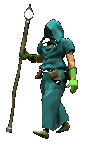

(This is as good a time as any to say that I am not affiliated with any of these sites, I'm not responsible for whatever you do with the links here or whatever you find on the other end, yada yada yada...)
FROM THE RIVER TO THE SEA

PALESTINE WILL BE FREE
- the palestine academy - courses and other resources to learn about/support Palestine
- Decolonize Palestine - a large collection of resources and information for people new to what's going on in Palestine
- free palestine carrd - a carrd website providing basic information on the situation in Palestine
- Palestine Debrief - a carrd website compiling educational resources and action items regarding Palestine
- What really happened on 7th October? - an informational article on what caused the recent violence and destruction in Gaza
- BDS Movement - a Palestinian-led movement calling for Boycott, Divestment, and Sanctions against Israel
- Medical Aid for Palestinians - linktree with different resources for taking action for Palestine
- Palestine Red Crescent Society - a chapter of the Red Crescent Movement and member of the International Red Cross that operates within Palestine
- Palestine Action - a movement to end Israel's arms trade in Britain
- Click to Help - click a button once a day to generate donations for Palestine (proceeds go to UNRWA)
- UNRWA Donations Appeal - a donation page for a UN agency dedicated to providing relief to refugees
- Islamic Relief Palestine Emergency Appeal - emergency relief fund for humanitarian aid in Palestine
- US Campaign for Palestinian Rights - resources and news for those who want to help liberate the Palestinian people
- #StandWithThe6 - a petition to show support for a resolution to condemn the closure of a Palestinian human rights group (for United States citizens only)
- Canadian Ceasefire Petition - a petition to the Prime Minister to demand a ceasefire in Gaza (for Canadian citizens only)
- Palestine Legal - legal support for those choosing to speak in support of Palestine
- Al Jazeera - news network based in the Arab world
- Al-Nakba - a documentary series on the Nakba, the beginning of the tragedy in Palestine.
- The Palestine Poster Project Archives - an archive of political art in the Palestine poster genre
- When Settler Becomes Native - a comic/illustrated article about the Israeli claim of indigineity from the perspective of a Jewish leftist
Web development

- Interneting is Hard - guided web development tutorials for complete beginners
- State of Javascript - yearly surveys that analyze how Javascript developers are feeling abt the state of the language
- wonderful websites webagogy - a collection of essays/articles on the different things a website can be/represent (very philosophical)
- HTML Cheat Sheet - web development cheat sheets and utilities (very convenient)
- Patterns for Personal Sites - an analysis of the traits of good personal sites
- John Doe's page - a simple template to make simple websites
- Neocities - a web host with a listing of sites and some limited social features
- Leprd.space - free web hosting for hobbyists
- Hotglue.me - a beginner-friendly visual website builder and host (no coding required)
- Straw.Page - simple drag-and-drop website builder (works on mobile and kid-friendly),
- Blot - turn a folder of files into a website
- Backgrounds with Emma - lotsa repeating backgrounds
- GRSites Textures - an archive of background textures
- Glitter-Graphics.com - a collection of graphics, layouts, glitter text, animated bgs, and more
- 88x31 button maker - made by hekate :^)
- Flaming text - logo maker with tons of options
- Glow text - super cool glowing text generator, check the partner sites for more
- Glitter text online - glitter text generator, lots of fonts + glitter styles
- Collletttivo - free open source fonts
- Glitterphoto - edit photos with glitter... and other things!
- EzGIF - gif editor
- Bulk resize photos - what it says on the tin
- Optimizilla Image Compressor - make your images smaller. it's addicting...
- Webmaster Tools - lotsa cool stuff
- MasterDiz - EVEN MORE cool website tools
- Button templates - buncha cool button blanks
- 7.css - windows 7 ui recreated in pure css
- Terribleideas' Site - some fun and cool native HTML tags made by Brad and Leon!
- HTML Comment Box - easily implemented comment box (hosted off-site)
- LibreRing - very easy to use webring template (with heavily commentated code :D)
- WAVE (Web Accessibility Evaluation Tool) - tool that identifies accessibility issues on a given webpage. also has a browser extension!
- google webfonts helper - generates css and downloads font files to easily self-host google fonts
- Addy Codes Toolkit - hundreds of curated tools/resources for web development
- broider - tool that lets you design CSS pixel borders
- PageCrypt - JS-based HTML page password protection
Alternative(s) (to) social media

- Dreamwidth - an open-source web journal based on Livejournal code and maintained by old LJ staff.
- DeadJournal - a web journal for intelligent pissed off people.
- InsaneJournal - a web journal that is generally anti-censorship.
- Bear Blog - super simple, super fast small web blogging platform.
- The Midnight Pub - a text-based pub/blogging platform served over https, gemini, and gopher.
- Smol Pub - a blogging/journal platform written in Gemtext.
- TiddlyWiki - a non-linear personal web notebook that functions SIMILAR to a Wiki.
- BUS STOP - an ephemeral and chill imageboard where posts are deleted after a day.
- The Orb - not quite sure what this is but it is definitely a forum
- The diaspora* project - a FOSS decentralized social network connected by independently run servers.
- SpaceHey - the Myspace revival!
- Multiverse - a micro-blogging platform that lets you get super creative with it
- omg.lol - a $20/yr service that gives you a personal subdomain + email forwarding, a one-page link-in-bio site, personal blog, pURLS, and other cool stuff
- Fedi.Tips - a non-technical guide to using Mastodon and other Fediverse platforms
- LandChad.net - a site that teaches you to setup your own internet platforms
- Host Things Yourself! - a fork of landchad.net (sans memes) that uses 100% free software
Web utilities

- Mojeek - an uncensored, privacy-respecting indie search engine
- Marginalia Search - a search engine that indexes smaller personal sites that you wouldn't easily find on Google
- wiby.me - a search engine that indexes personal/independent sites with simple html/css
- 4get.ca - a proxy search engine that removes trackers and ads
- Anna's Archive - a search engine for shadow libraries like sci-hub, z-library, etc.
- Mr. Free Tools - search for different free (FOSS, freware, freemium, etc.) tools
- Temp Mail - Disposable Temporary Mail - what it says on the tin. good for accessing sites/programs that want you to sign up before you can browse their contents.
- SharkLasers.com - another temporary email service.
- Internet Archive - non-profit library digitizing and archiving TONS of stuff on and offline
- Catbox.moe - simple file upload/sharing site.
- Have I Been Pwned - see if your email/phone/passwords were in a data breach.
- 12ft Ladder - bypass any article paywalls
- DeepL Translate - an actually really good translation tool
- Shodan - search engine for internet-connected devices
- inter.tube - a "music locker" that you can store your music files in and stream over subsonic protocol
- cobalt - actually good online video-to-mp3/mp4 site with compatibility with multiple sources including youtube/tiktok/twitter
- MarkdownDown - converts any webpage to markdown with images
- movie-web - a site to watch any movie or show that automatically finds working streams for you
- Kill the Newsletter! - converts newsletters into atom feeds
- LRCLIB - a database of synchronized lyrics
- Firefox Profilemaker - tool that generates a Firefox profile for you based on your needs (increasing privacy, removing unneeded features)
Real-life utilities
- Safe Trade Spots - database of locations in the US to meet up and complete in-person transactions
- Get Drunk Not Fat - comprehensive list of calorie information for alcohol
- Live Near Friends - helps you find multiple homes in the same area for you and your friends
- Buy Nothing Project - a community-building social movement/app that promotes hyper-local sharing as opposed to selling.
- Little Free Library - a nonprofit org that aims to build community and increase book access with mini library boxes.
- Unfuck Your Habitat - both a guide to cleaning your house/habitat and making your life better
- Science-y Hair Blog - comprehensive resource for personal hair care
- Full Cart - America's virtual food bank :^)
- Budget Bytes - cheap but good recipes for people on a budget
- Plan C - info on how to access at-home abortion pills online.
- Free Exercise DB - frontend to a database of different exercises with photos and descriptions of how to perform them
- DAREBEE - a non-profit, accessible fitness resource with tons of different workouts, programs, and an exercise library. there's something for everybody here
Cool software

- Fraidycat - program that lets you follow/organize accounts and feeds all across the web
- MusicBee - the best customizable music player and manager IMO
- TuxGuitar - the ONLY good (not to mention free), simple-to-use guitar tablature software
- Obsidian - super customizable personal offline knowledge base + notetaking app (its like Evernote but better)
- Syncthing - p2p file syncing program (I love this)
- Open-Shell-Menu - windows start menu/taskbar skinning tool that can emulate previous windows versions
- Calibre - comprehensive e-book library management software
- HTTrack - offline website backup/mirroring tool
- BatteryInfoView - utility for laptops that lets you view battery info and health
- pinga GUI - image optimization for web
- Custom YouTube Music Desktop App - comes with adblock and other useful plugins for easy listening
- LRCGET - mass download synchronized lyrics for your personal music library
Cybersecurity
- The New Oil - simple guides for non tech-savvy people on increasing their privacy
- Just Delete Me - "A directory of direct links to delete your account from web services."
- 2FA Directory - a directory of websites that do/don't have 2-factor authentication
- IntelTechniques - in-depth guides from a former private investigator on intelligence gathering and minimizing your digital footprint
- Surveillance Self-Defense - a guide from the EFF to help avoid online surveillance
Artist tools

- VIshopper cut out people - pics of people isolated from background. also has animals, objects
- removebg - removes backgrounds from images replaces with transparency
- waifu2x - image upscaler, best for anime-styled artwork.
- Adorkastock Sketch - timed gesture drawing tool with photos of real models
- Posemaniacs - gesture drawing tool with 3d models and multiple camera angles (currently under construction.)
- Human anatomy for artist - TONS of photo pose references (many are nude or semi-nude)
- Animal Photo Art References - similar to previous, but with animal heads chosen by skull shape.
- Pose Search - another similar tool that lets you pose a skeleton and view reference photos matching the pose.
- Fat Photo Reference - photo collection of real fat people for art reference (password required)
- My Body Gallery - user-submitted photos of women of different ages, heights, weights, etc.
- Virtual Lighting Studio - allows you to light a portrait with different types/colors of lights at different angles
- Floor plan creator - what it says on the tin
- Roomsketcher - similar to Floor Plan Creator
- Paletton - interactive color scheme creator
- Photopea - browser art program, very similar to Photoshop
- The Creative Independent - website full of practical and emotional guidance for artists. worth a look for any artist
- HBeats Art (R18+) - a blog about the business of becoming a freelance NSFW artist
- Radiorunner's Curriculum for the Solo Artist - a curriculum built for the self-taught artist looking for structure and direction.
- NOT/BUT - TO-ZO.COM - advice on self-talk when it comes to drawing
- paint-BBS - an oekaki board made by cinni :^)
- Tegaki E Reboot (TEv2) - a very simple oekaki board that has an active userbase, but doesn't seem to be actively maintained.
- Oekaki na smoczym - a polish oekaki board that has a pretty old-school vibe (relatively speaking).
- Glaze - a tool for obfuscating your art from use in AI datasets
Learning

- Anna's Archive - a search engine for shadow libraries like sci-hub, z-library, etc.
- Sci-Hub, Library Genesis, and Z-Library - shadow libraries for books and scholarly articles
- Standard Ebooks - volunteer project that makes high quality public domain ebooks
- Global Grey ebooks - high quality public domain ebooks formatted by one person
- Project Gutenberg - lots of free books
- Open Library - Internet Archive's library
- ArXiv - open access scholarly articles
- Open Library of Humanities - open-access academic journal publisher
- Book Search Engine - a custom search engine for finding ebooks online
- Smort.io - tool for easily reading and annotating arXiv ypapers
- LibriVox - free public domain audiobooks read by volunteers from around the world.
- MetPublications - free downloads to out of print met publications
- The Anarchist Library - lots of communist (mainly anarchist) literature
- Usenet Archives - a collection of Usenet newsgroup articles on a variety of topics (mainly science)
- Marxist Internet Archive - an archive of lots of marxist and marxist-adjacent works.
- Reading Marx's Capital With David Harvery - a guided course for actually understanding marx's capital
- CELT - a library of historical and literary Irish texts in several different languages.
- Kalamullah.com - a library full of Islamic texts, lectures, and videos
- Mastering the Core Teachings of the Buddha - a pretty intense book for people seriously dedicated to the Buddhist path
- The American Yawp - a collaborative American history textbook
- LibreTexts - a library of free and accessible textbooks for students and instructors
- You Gotta Know - series of articles that have tons of facts on specific topics (made for the NAQT)
- Tatsumoto - a comprehensive resource for learning japanese
- Tae Kim's guide to Japanese Grammar - most recommended japanese grammar guide
- Minato - free Japanese courses sponsored by the Japanese government
- Animelon - learn Japanese while watching anime
- jpdb - a Japanese kanji/vocab learning resource that has prebuilt decks based on popular Japanese media
- WatanoC - a web magazine written in simple Japanese for learners to practice reading
- ASL Rochelle - free ASL course
- The Language Construction Kit - a guide to making your own conlang
- Justin Guitar - very comprehensive guitar lessons for all skill levels
- Lipreading.org - free online lipreading course
- Face Blind! by Bill Choissier - a free book about face blindness by someone with the condition
- ChemQuiz.net - free practice quizzes for chemistry students (with optional paid upgrade)
- PhysQuiz.net - free practice quizzes for physics students (with optional paid upgrade)
- Calculus Made Easy - a book on calculus that is a simple, straight-to-the-point explanation for beginners
- Developer Roadmaps - community-made roadmaps with educational resources for people looking to get into a specific development path
- free-programming-books - a list of free programming resources across different languages
- VIM Adventures - learn how to use vim while playing a game!
- Learn C++ - a textbook-length resource for learning to code in C++
- Hack This Site - a legal training ground and info hub for ethical hackers
- Github Skills - interactive guides for learning to use Github
- Learn Git Branching - interactive visual guide to learning git branching
- Build Your Own X - a collection of guides for coding different software from scratch
- Web Math Minute - a math practice sheet generator (addition, subtraction, multiplication, division)
- Wildflower Search - crowdsourced site that helps you identify wildflowers
- Scarleteen - very helpful sex education including LGBTQ health topics
- Practice Prayer - a little practice guide for your hobby of choice
- Gridfiti - productivity/study inspiration and tips (mostly notion templates)
Mental Health

- The Integral Guide to Well-Being - a really comprehensive interactive resource for IFS and other introspective therapy tools
- DID Research - super comprehensive resource for info on dissociative identity disorder (and some other dissociative disorders)
- ADHD Evidence Project - site of curated scientific research regarding ADHD
- Personal Summary of (...) Avoidant Personality Disorder - archive of someone's compiled research on avpd
- Personal Summary of (...) Avoidant Personality Disorder - archive of someone's compiled research on avpd
- Out of the FOG - coping toolbox and information resource for victims of emotional abuse (tw: framed as actions of abusive cluster b folks)
- Mental Hellth - a newsletter exploring how the current world affects our mental health
- I feel like shit - an interactive self care guide
- My Fridge Food - recipes based on what you have in your kitchen at the moment
- Therapy Shoppe - sensory toys, fidgets, motor skill tools, and other assistive stuff. only thing that requires money on the list bc i love this place.
- Getselfhelp.co.uk - lots of printable therapy worksheets. partially geared toward therapists, but still a great self-help resource for anyone no matter what they struggle with.
- Habitica - a gamified to-do list/habit tracker in the form of an RPG. has alot of mental health guilds that are very motivating.
- The Analog Brain - a tool that guides you through your executive dysfunction to find out what you want/need in the moment
- Monotropism - a theory of autism by and for autistic people
- Self-Compassion - a WHOLE ENTIRE WEBSITE about developing and maintaining self-compassion, which is important for a healthy mind!!
- Emotional Competency - a guide to assessing and increasing your emotional competency
- Improve Your Social Skills - a guide for improving social skills written by an autistic clinical psychologist
- Yoga Meditation - comprehensive resource on traditional yoga as taught by the Himalayan masters
- Media Addicts Anonymous - a 12-step recovery program for compulsive use of media (i.e. soci
LGBTQ Resources

- Transfem Science - a comprehensive resource for information on transfem hormone therapy
- diyhrt.cafe - a listing of suppliers that sell hormones geared towards MTFs. use at your own risk
- DIY HRT Directory - a guide to safely perform hormone replacement therapy on one's own. again, use at your own risk
- Transthetics - some really futuristic (functional & realistic) FTM packers and prosthetics
- Transbucket - photo-sharing site for transgender surgery outcomes (account required)
- Phallo.net - an informative and comprehensive resource on FTM phalloplasty
- Gay Sex Positions Guide (R18+) - visual Kama Sutra for gay sex (mainly for penis havers)
- Okazu - a blog from 2002 focusing on yuri and lesbianism in Japanese media
- Black Trans Archive - a really trippy and creatively made art project about black trans identity and experience.
- FaT GiRl Archive - archive of a 90s San Francisco fat-liberation zine made by and for dykes
- PronounDB - a database you can have your pronouns added to that will display them across supported websites
Gaming

- lain game - a playable browser version of the serial experiments lain ps1 game with english text/subtitles
- Diablo Web - a web port of the original diablo?!
- Taiko Web - an unofficial web implementation of Taiko no Tatsujin
- Project Project Dxxx - an unofficial free implementation of Project Diva
- Yume Nikki Online Project - play multiplayer Yume Nikki (and its many fangames) through your browser
- Board Game Online - very weird online board game, playable with friends or strangers
- Fallen London - a gothic supernatural text-based rpg
- Kingdom of Loathing - a funny surreal rpg adventure game
- Flight Rising - a dragon-raising and breeding browser-based adventure game (think neopets)
- Furcadia - i think this is a furry web-based mmorpg? seems cool!
- Pokemon Eclipse RPG - an online pokemon browser rpg with a lot of fun minigames and events
- Everskies - a pixel doll dress up site with forums, very pro-black which is nice.
- Bimboland (18+) - a satirical bimbo dress up site with a very supportive user culture. currently known as Ximboland.
- Flowergame - grow some plants... :^)
- Cube 2: Sauerbraten - a fun little open source fps. semi-inactive but its still fun.
- 2009scape - a free & open source remake of 2009 era RuneScape
- Vimm's Lair - downloads of classic games, manuals, and more from consoles released between 1985-2006
- My Abandonware - download old games from 1978-2010 for free
- The Collection Chamber - a godsend of preconfigured installers for older games that otherwise don't work well on modern PCs
- Zomb's Lair - another collection of classic games with preconfigured installers
- Pretend You're Xyzzy - a cards against humanity clone.
- Revenge of the Sunfish - official website of Bizarre Wound games (some very unique games here)
- The Asenheim Project - play classic visual novels online through your browser
- RetroGames.cc - play TONS of retro games through your browser
- LCDonald's - an emulator for those old McDonald's LCD toys?!
- Hidden Palace - a video game media preservation wiki. check out project deluge!
- RetroAchievements - community-made achievements for retro games that you can obtain using supported emulators
- Aimlabs - free aim training program for FPS and MOBA games
- Dark Pattern Games - a game review site that points out dark patterns/psychological tricks in mobile games.
- Eroge Reviews (R18+) - a (seemingly) inactive eroge review blog with a lot of interesting games
- ROMhacking.net - website dedicated to romhack news, hosting downloads to hacks, and teaching how to learn romhacking
- SEGA SKY - a Polish Dreamcast news site (also the only place I've been able to find certain game downloads)
- Sega Saturn SHIRO! - a site for all things Sega Saturn!
Fansites

- Kirby's Rainbow Resort - a super cute kirby fansite with lots of stuff. hasn't been updated since last 2020, but i have hope.
- NFC - the internet nirvana fan club. probably not being updated, but the forum is still active.
- thought experiments lain - lots of interesting stuff about lain. no longer updated.
- OMNIPRESENCE - another lain fansite. a neat relic of the past.
- The Fade - a QOTSA fansite that stopped getting updated in 2006 or so, but has alot of cool info and freebies (like guitar tabs!)
- Lookin' Bratz - a Bratz fansite with an unbelievable amount of info and content on it.
- Empty Movement - an ancient Revolutionary Girl Utena website with a crazy amount of content (and official images) on it.
- TamaTown - a Tamagotchi fansite with tons of information, news, and guides.
- Ricky-starks.com - a fansite dedicated to the wrestler Ricky Starks, currently signed to AEW.
- tha waltens files - fansite about The Walten Files, an analog horror Youtube series
- HOMESTUCK.NET - huge fan resource archive for Homestuck
- Disco Reader - creates graphs based on conversation paths in Disco Elysium.
- NiGHTS into Dreams.com - a NiGHTS fansite with alot of cool content, official and fanmade (including a forum!!)
- The Ham-Ham Paradise - a vintage Hamtaro fansite with a CRAZY amount of content, including episodes of the series!
- Guilty Gear RU Project #Reload - a vintage Guilty Gear fansite with a TON of high quality scans and artwork!
- SPCodex - a surprisingly comprehensive Smashing Pumpkins wiki
- The Nerve Tower - modern fansite for the Playstation game Baroque (incl. the PS2 version)
- Paradise Hotel 51 - a Suda51 fansite that covers all his projects
- Citizen Insane - a Radiohead fansite that has extensive coverage of EVERY SONG/ALBUM/BAND MEMBER
- HST Books - collector's site about Hunter S. Thompson and his many works
- CRUELTY SQUAD CUSTOM CONTENT - archive of custom maps, mods, and textures for Cruelty Squad
- The No Association Page - a poorly archived but still neat Silverchair fansite
- Petscop-Forensics - partial collection of information about the Petscop webseries including episode descriptions and theories
Interesting sites

- The Quantitative Study of Dreams - resources for reading about and conducting dream research
- Windows93 - a fun operating system in your browser :^)
- Our Mother Tongues - a Native American language revitalization project
- Smithsonian Open Access - millions of free-to-use images and data from the Smithsonian
- 17776, What football will look like in the future - a genuinely phenomenal webseries about football in the year 17776
- BLOODSAD - the worst possible feeling. a web project by one of my favorite artists.
- Textfiles.com - a huge collection of text files that got passed around on BBSes back in the day.
- Everything2 - a lowkey website full of original writings (of different genres, topics, etc) submitted by users
- Web Design Museum - a gallery and timeline of trends in web design from 1991-2006. hugely inspiring.
- SerenityOS - a turbo cool, retro, unix-like operating system!
- Virtual x86 - emulate an operating system in your browser
- Riseup - a tech collective that provides communication tools to radicals
- Black Socialists of America - website of the black socialists of america, cool design + interesting tools
- Kayla's World - the neat portfolio site of a web sorcerer and artist.
- Brunch Bureau - a noir detective streamer's website... I THINK? super cool style and has a 'newspaper' of sorts.
- SCUMSUCK.COM - fun and cool artist's website showing off their work including ocs, a webcomic, and a shop (with fun goodies)
- ANNIKA IZORA - website of a black designer who enjoys exploring tenderness, dreaming, and digital gardens as praxis
- Lackadaisy - a comic about a bunch of dubious cats running a speakeasy during Prohibition.
- Solaria's Webspace - cool art and some pretty unique web design tutorials/resources.
- Free Music Archive - tons of genuinely free music with license information for each.
- Radioooo - a musical time machine... radio! by decade and genre.
- Comradery - a co-operative alternative to Patreon
- Free Geek - a nonprofit that promotes digital access to all and refurbishes technology to give it to people in need
- Gods And Monsters - website about mythological creatures that feels pleasantly personal
- DEEP HELL - a webzine analyzing what we can learn from video games
- Blood Knife - a webzine about cyberpunk, sci-fi, horror, and communism... and the culture in general
- Wrestling Arsenal - a blog for gay guys who love pro wrestling (it's life-changing)
- Floating Neutrinos - website of a family who lived on floating scrap rafts
- Ted's Caving Page - the internet's first creepypasta
- Poolsuite - internet leisure suite.
- Big Soy Naturals - sexy and cool podcast where two they-devils discuss happenings of the internet.
- DIY Feminist Cybersecurity - cybersecurity tips aiming for safety in digital spaces.
- unixsheikh.com - articles and tutorials about open-source, unix/gnu, sysadmin, and other techy stuff of that nature.
- digital love languages - a 10 week course exploring code as a gentle, healing, and loving practice
- GUIdebook - an older site that preserves and showcases GUIs and info about them
- The Cutting Room Floor - wiki that compiles information and research on unused game content
- Slipshine (18+) - sex-positive porn comic publisher (check out The Rock Cocks!)
- Permacomputing wiki - a resource on permacomputing, a permaculture approach to computer and network technology
- Listen to Wikipedia - listen to musical notes play every time there is an edit on Wikipedia
- HBR1 - homepage and online radio of the electronic/trance/ambient record label Hardboiled Records
- Wiki Wiki Web - the very first wiki... EVER!
- Institute of Network Cultures - a research organization that analyzes the relationship betwen culture and technology
- Hack Club - a worldwide network of teenage coders to meet others and create projects together
- Internet Movie Firearm Database - wiki documenting all the different guns you see across media (not just movies!)
- Apple Rankings - apple opinions are serious business
- Art for Not Humans - minimalist online art experiment
- The Summerlands - an online Celtic pagan community
- Steve's Computer Collection - a showcase of someone's retro computer collection w/info on the different systems
- Protoweb - a proxy server that allows users to surf the web as if they had time traveled back to the 90shttps://protoweb.org/
- earth - "a visualization of global weather conditions"
Miscellaneous

- Data Hoarding in the Modern Age - how to become a data hoarder :^)
- Can I Play That? - guides and reviews of accessibility in games. run by disabled gamers
- Global Network of Discovery - neat collection of sites that can recommend things you might like (music, artists, etc)
- Kosmi.io - online hangout webapp for stuff like watching videos and playing games. think rabb.it
- tane.us - plays animal crossing music that corresponds with the current time.
- Magic Baby Names - type names you like and get other names like them. good for character creation
- Sleepyti.me - sleep cycle calculator. basically, helps plan when you should sleep to feel good in the morning.
- paper cd case - generates a foldable paper cd case based on info you put in. also makes jewel case inserts.
- Fansub Guides - guides on how to make fansubs.
- Watch Wrestling Online - stream pro wrestling from tons of different promotions. has popups on some video streams.
- DON'T YOU LECTURE ME WITH YOUR THIRTY DOLLAR WEBSITE - see it to believe it.
- 1001 Albums Generator - have one album from the '1001 Albums to Listen To Before You Die' list sent to you every day.
- Winamp Skin Museum - a nice-to-browse collection of Winamp skins hosted on Internet Archive.
- VHSearch! - a Neocities search engine!
- 5eTools - a suite of free browser-based tools for players and DMs of D&D 5e.
- Food Not Bombs - a global movement that serves food and provides other support to communities with chapters across the globe.
- Moebuntu - a custom Ubuntu theme that makes everything MOE
- morss.it - make a full-text version of an RSS feed
- Torrents.csv - a collaborative searchable git repository of torrents
- Awesome piracy - a curated list of piracy resources
- Veadotube - a very intuitive and simple-to-use PNG/vtuber tool
- The Anti-Capitalist Software License - let everyone but captialists use your software
- Archiveteam - info hub for web archival projects
- PC Part Picker - pick and show off your PC builds.
- Fiveable - cool online group study tool with timers, task list, and music (also can be used solo!)
- The Order of the Good Death - a death-positive movement that aims to reform death services in our society.
- De-google-ify Internet - a movement by Framasoft and CHATONS trying to offer community and privacy-friendly software alternatives.
- Bluemaxima's Flashpoint - a downloadable (and viewable) archive of Flash games and animations
- Dagobah Flash Gallery - archive of tons of old Flash games and animations
- Sudomemo - fanmade continuation of Flipnote Hatena
- MangaDex - my current go-to manga website
- Ichigo's Sheet Music - ancient collection of free game/anime sheet music
- Mazeguy Smilies - pixel artist who provides free-to-use classic smilies
- space email - an 'indirect communication platform' where you send and receive messages from strangers
- Focusmate - group coworking/body doubling website to help you get stuff done with a partner
- Dudeist Wedding Officiant Course - course for Dudeist priests to learn how to officiate a wedding
- The Oracle of Bacon - find any given actor's Bacon number
- Code::Stats - write code and level up based on how much programming you do
- i.webthings hub - a VERY COOL blog of sorts that catalogs cool links the webmaster found. there's also a directory to browse!
- ProPublica - indie nonprofit newsroom that focuses on investigative journalism into abuses of power
- Ladybird - an upcoming open-source browser not associated or based on Mozilla or Chromium web engines
- Neal.fun - silly little web games and other interesting interactive pages
Interesting articles

- The Very Real Decline of All We Hold Dear As Told Through the Progressively Shittier Spider-Man Movies - They really could be better movies.
- Reimagining Care-full Communities - Do we [as people of color, as queer-identified people] feel truly unsafe on the Internet?
- The Day the Good Internet Died - For a small slice of time, being online was a thrilling mix of discovery, collaboration, creativity, and chaotic potential. Then Google Reader disappeared.
- In Memory of Dump.fm, an Endlessly Collaborative Image Poem - Dump.fm died a quiet, seemingly definitive death this month, after having survived a number of rumored deaths over the years.
- This webcomic made it okay to be sad online. Then its artist vanished. - The author of Pictures for Sad Children went AWOL after a 2014 Kickstarter drama. In an exclusive interview, she explains why she had to unplug from the internet.
- A Study of Physical Education - A short essay written by Mao Zedong on the importance on physical education and assessing where current methods of promoting exercise have failed.
- How To Pirate - Written by a fellow Neocities user.
- The Gospel According to Pusha T - The artist raps about cocaine with effortless dexterity. But in lionizing the antics of the dealer, he fails to fully comprehend the life of an addict.
- Growing Up Kinky: Research Shows How Kink Identity Is Formed - New research sheds light on the formation and development of kink identity.
- Yakuza 3 Reviewed by Yakuza - What it says on the tin. A very fun read analyzing the accuracy of Yakuza 3.
- On the (In)security of Social Media Callouts - A criticism of the current "callout" phenomenon on social media sites.
- 'LOVE YOU GUYS (NO HOMO)' - How gamers and fans play with sexuality, gender, and Minecraft on YouTube.
- The Unified Theory of Ophelia: On Women, Writing, and Mental Illness - On young girls driven mad by the world and seeing Ophelia everywhere.
- standing on the shoulders of complex female characters - am i in my fleabag era or is my fleabag era in me?
- I Should Be Able to Mute America - The rest of the world should not have to know the name Bari Weiss.
- How Millennials Became The Burnout Generation - I couldnt figure out why small, straightforward tasks on my to-do list felt so impossible. The answer is both more complex and far simpler than I expected.
- Everyone needs to grow up - Whether its people who mention their Hogwarts house on their Hinge profile or literal white supremacists, culture is awash with adult babies.
- what happened to yesterweb? an investigation - A pretty accurate summation of what went on with the Yesterweb, in case you weren't there for it.
- Drawing the Line: Bisexual Women in the Lesbian Community - An exploration of rigidity in defining sexual identities.
- The Dorito Effect: Healthy food is blander than ever and it's making us fat - Dunno if I care much about that last part, but it's an interesting exploration on artificial flavoring and nutrition.
- Buried Banaat and Bal : TFF Tafsir of Prophet Lut [a.s] - A comprehensive analysis of the Quranic story of Lut that debunks the common belief that it is about the prohibition of homosexuality in Islam (among other things).
- Fix Your Heart or Die: The Startling Empathy of David Lynch - Exploring the overlooked themes of empathy and the beauty of emotions in David Lynch's work.
Interesting videos

- Break Bread - A video about the challenges black youtubers face as well as the overwhelming "whiteness" of Breadtube.
- Why Did We Like Elfen Lied? - An analysis of 2000s weeb teen culture through the lens of Elfen Lied.
- LOWTAX: Empire of Dirt (The Something Awful Documentary) - The only decent coverage I've seen of SA's history.
- The History of Newgrounds (reupload) - It's offensive, because Newgrounds.
- "Killing Stalking" and the Romancing of Abuse - By someone who actually read the manhwa.
- Are They Gay? - Nick and Gatsby from The Great Gatsby - Literary analysis at its finest.
- How the Teenage Players of Habbo Hotel Turned to Financial Crime - It's more insane than you think.
- THE COOLEST PS1 GAME: Racing Lagoon - A super fun video by the best creator on Youtube.
- Explaining Iwakura Lain - Seemingly the most accurate and reasonable analysis of Lain.
- Professional Wrestling is Stupid and Beautiful and I Love it - The video that sold me on getting into wrestling.
- TempleOS | Down the Rabbit Hole - The best operating system ever created.
- Pathologic is Genius, And Here's Why - A video about a weird Russian game about a plague, and other things.
- ACTION BUTTON REVIEWS Tokimeki Memorial - A SIX HOUR VIDEO on a bizarrely influential PS1 dating sim.
- Who Told Pusha T About Drakes Baby? - Interview with Pusha T on Joe Budden's podcast about his insanely crafted Drake diss.
- BORED APE NAZI CLUB - A deep dive on the Neo-Nazi roots of the Bored Ape Yacht Club NFTs.
- The Edgar Allan Poe Horror Game | The Dark Eye - An exploration of a BADASS old adventure game based on three Poe short stories.
Online stores

- Fuzzy N Chic - sells handmade Tamagotchi covers and other Tamagotchi accessories.
- itemLabel - a revenge based company that sells Peepys and other collectible creatures, plus some neat accessories.
- JJGames - super affordable used games
- Hirbawi Kufiya - the last and only kufiya factory left in Palestine.
- Online Ceramics - a streetwear clothing company that's partnered with A24 (expensive)
- Ragstock - recycled and vintage clothing (not SUPER affordably priced)
- Lazy Oaf - streetwear brand with colorful, eye-catching designs (not cheap)
- Better World Books - socially-conscious bookseller with loads of cheap new/used books
- House Plant Shop - actually reasonably priced house plants.
- Houzz - home decor store with alot of cool rugs
- READY! Computer Corp. - newer, small company that makes very stylish portable computer kits
- miniSUPER Sticker Club - the cutest stickers u ever done seen
- Nuclear Waste - a goth/punk/alt fashion/merch store based in Tijuana